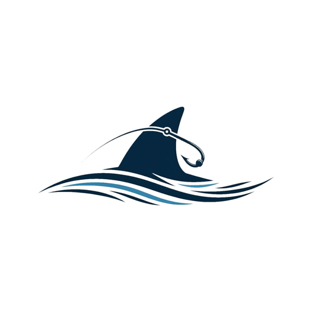

Durante o inverno, o litoral norte de São Paulo recebe a passagem das Baleias-Jubarte em rota migratória. Uma experiência contemplativa e responsável no mar de Ubatuba.
← Voltar ao Turismo NáuticoBaleia-Jubarte (Megaptera novaeangliae)
Conhecida pelos saltos impressionantes e pelo canto característico durante o período reprodutivo.
*O roteiro poderá sofrer alterações de acordo com as condições de navegação.